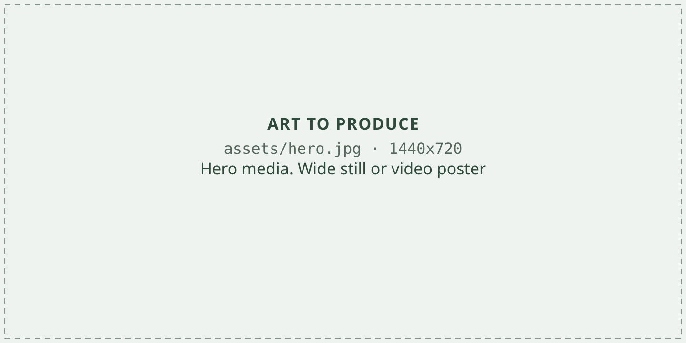
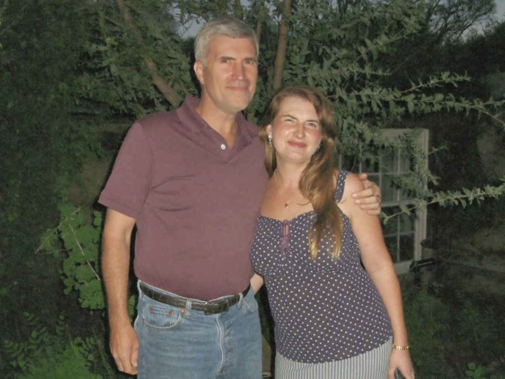

How Does Someone Who Does Everything Right Get Worse for 28 Straight Months? Three Offices Wouldn’t Say.
Cut the sugar. Lost the weight. Walked every morning. Watched the scan come back worse anyway. If the answer is still “give it more time,” time isn’t a treatment. Read this before your next visit.

There is an answer to the question at the top of this page. It sits on my kitchen table in four typed pages. You’re going to read the part that counts, word for word, and the letter I wrote to get it.
But first I have to tell you about the man who typed those pages. Because that’s the part I still can’t explain.
I’ve never met him. I still haven’t. I don’t know what he looks like. You couldn’t find a photo of him if you tried. I’ve tried.
But before I can tell you about him, you need to see what twenty-eight months of doing everything right looks like.
7 Reasons People Over 40 Are Switching to Livana Liquid Liver Support
(Besides Finally Getting Their Liver Numbers Down)
Whether you’re trying to stay ahead of stubborn liver numbers or you’re tired of a 2pm crash, brain fog, and heaviness under the ribs — here’s why people are supporting the source instead of another cleanse.
20,000+ Reviews | 60-Day Guarantee
He Kept That Plan. The Chart Did Not.

You need to know one thing about my husband David.
When he commits to something, he does not break.
Remember that… because it is about to become the cruelest fact in this story.
Four years ago the words were fatty liver.
The plan was lose ten percent and come back.
For twenty-eight months, he never broke it.
Not at his sister’s wedding. Not on our anniversary. He walked the dog every morning. He took the milk thistle. He ate just what they told him to eat.
And the next visit said give it more time.
So he did…
-
The first six months.
The whole pantry went in a trash bag. The Sunday cookouts stopped. He asked them to take the pie back.
-
The next labs.
The numbers went up. The next scan looked worse. Give it more time, they said.
-
Month 28.
He sat at the same kitchen table and said, “Linda, I gave up every food I love. And it is still getting worse.”
Three offices. The same two questions.
What did we miss? Why does a man who does everything right get worse?
I got sympathy. Sympathy is not an answer.
They say it’s common. I don’t care that it’s common. It’s David.
What came next did not come from an office.
The man they never tell the patients about
Here’s what I do know.
For thirty-one years, when a liver case had a hospital stumped, the chart went to him.
My sister-in-law spent eleven years answering phones in a liver unit. She watched it happen over and over.
A patient nobody could explain. The doctors would argue about the chart. They’d get nowhere.
And then somebody would finally say it out loud…
Send it to him.
She said the younger doctors had a nickname for him. Dr. House. Like the TV show. The one they bring in when nobody can figure out what’s wrong with the patient.
In eleven years, she never saw him once.
Neither had anyone she worked with.
No face. No office. Just a fax number.
The chart went out. One typed page came back with the answer.
And here is the part I can’t stop thinking about.
The patient never heard his name. The answer went into the chart. The office delivered it. Nobody ever said where it came from.
Eleven years of that.
He’s retired now. No practice. No listing. Nothing to find.
What she had, after eleven years, was an address. A post office box. In a town up north I’d never heard of.
I asked her, why would he answer me? I’m nobody.
And she said the thing that made me get out a pen…
“Write to him. The worst he can do is nothing. That’s all the rest of them did.”
What I Wrote to a Man I’d Never Met
I’m not going to pretend it was a clever letter.
One lined page. My regular pen.
I didn’t send the chart. I didn’t have it. I sent the facts you already know.
The plan. The twenty-eight months. The numbers that went up anyway.
And the two questions no office would answer.
What did we miss?
Why does a man who does everything right get worse?
I read it back once. It didn’t feel like enough.
So under those two questions I added one more line…
What are we not being told?
I mailed it on a Tuesday, to a box number, in a town I couldn’t point to on a map.
Then I did the thing you do…
I forgot about it on purpose.
He Knew Things I Never Told Him
Nine days later, an envelope.
No return address. My name in blue ink. Four pages, typed. No letterhead. No signature. I’ll get to the signature.
The first page stopped me in the driveway. It opens with three things I never wrote him.
From page one Mrs. Hayes,
Three things you never put in your letter.
One. There is a bottle of milk thistle on your kitchen counter, next to the coffee maker. Your husband takes it every morning.
Two. At the appointment, your husband said ‘I don’t drink’ twice. Not once. Twice. Because of the way they were looking at him.
Three. Somewhere in the last year, he stopped reading the new lab numbers out loud to you.
Am I close?
All three were true.
The milk thistle was David’s own idea. I never wrote the man a word about it.
Here is how he knew.
I’m not a psychic. I have read your letter hundreds of times.
For thirty-one years it kept landing on my desk, in different handwriting, with different names on it.
The husband who did everything right. The pantry in the trash bag. The numbers that went up anyway.
It is always the same letter.
You are the first family to ever write me directly. So for the first time, my answer goes to the person it belongs to.
Your liver doesn’t drink what you eat. It drinks what your gut lets through.